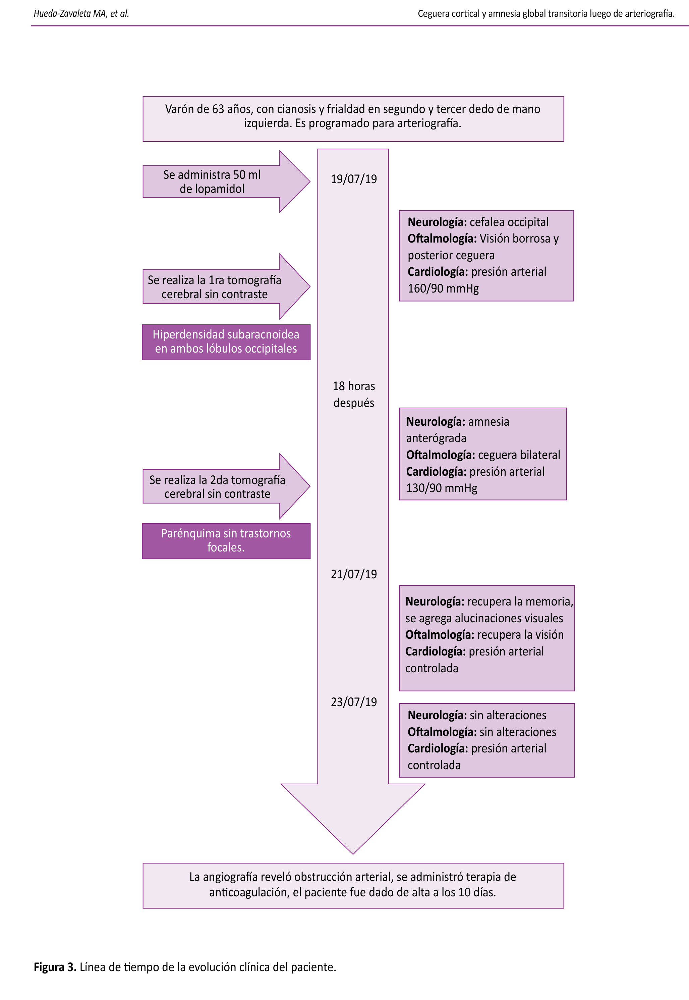

Figura 1 · Copaja-Corzo et al. · Acta Med Peru · 2020
Línea de tiempo publicada

Figura 3 · Evolución clínica del paciente
No es una epicrisis. Cada dato debe responder: ¿esto ayuda a entender por qué el caso es relevante?
Pepa 4
La discusión
🔑 Hallazgo principal (una oración directa)
📚 Comparación con la literatura (casos similares, en qué se parecen/difieren)
🧠 Mecanismo o explicación (si se puede)
⚠️ Limitaciones (honestidad: es un solo caso)
💡 Mensaje final (qué aporta al conocimiento)
Ejemplo — Paper 2020
Ceguera cortical reportada en angiografía cerebral y coronaria → nunca en periférica → mecanismo propuesto: disrupción de BHE → limitación: caso único, no generalizable
La discusión no es repetir tus resultados. Es responder: ¿qué significa mi caso en el contexto de lo que ya se sabe?
Ruta
✅
La guía CARE
Tu GPS antes de escribir
✅
Las pepas del caso clínico
Lo que no puedes olvidar en cada sección
03
Los errores que matan tu paper
Antes de que nazca
04
El reto
Tu primer borrador en 7 días
ERROR 1
No tener el consentimiento informado
Sin consentimiento firmado, tu caso no existe.
Escribes todo. Buscas la revista. Mandas el manuscrito.
Te piden el consentimiento firmado.
El paciente ya se fue de alta hace dos meses.
No lo puedes ubicar.
Todo tu trabajo se perdió.
Esto es lo PRIMERO que haces. Antes de escribir una sola palabra.
ERROR 2
Invertir semanas sin validar la relevancia
El error no es pensar que está interesante.
Es invertir semanas sin saber si es publicable.
La revista pregunta: ¿cuál es el aporte?
No sabes qué responder.
Vuelve a los 5 criterios de la Pepa 1. Si no cabe en ninguno, quizás no es publicable. Y eso está bien.
ERROR 3
Nunca empezar
El error más común no es escribir mal.
Es no escribir nunca.
"Doctor tengo un caso, ¿qué hago?" → les doy pautas... y nunca empiezan.
"Tenía un caso hace tres meses pero ya perdí los datos."
"Necesito hacer cinco cursos antes de poder empezar."
Uno aprende escribiendo. Te sientas, escribes mal, corriges, y así sale.
ERROR 4
No buscar un mentor
Solo es la receta para abandonar.
A mí me tomó casi 1 año publicar mi primer caso.
¿Por qué? Porque ni yo ni mi asesor teníamos experiencia.
Con alguien que ya lo hizo, eso podría haber sido semanas.
No necesitan a alguien que les escriba el paper.
Necesitan a alguien que les diga: esto va por acá, esto no, y ánimo que ya falta poco.
Ruta
✅
La guía CARE
Tu GPS antes de escribir
✅
Las pepas del caso clínico
Lo que no puedes olvidar en cada sección
✅
Los errores que matan tu paper
Antes de que nazca
04
El reto
Tu primer borrador en 7 días
¿Qué te hace diferente?
Todos ustedes son residentes. Todos médicos. Todos estudiando.
🎤
Congresos
Tu primer congreso podría ser llevando un caso clínico
✈️
Rotaciones internacionales
Los papers te pueden ayudar con una rotación internacional
📄
CV
Un caso clínico publicado ya te diferencia del 90% de tus colegas
🧠
Pensamiento crítico
Publicar te hace mejor clínico
El reto
Tu primer caso en 7 días
Día 1🔍 Identifica tu caso
Día 2✍️ Saca el consentimiento informado
Día 3📚 Búsqueda bibliográfica
Día 4🏥 Escribe el caso clínico
Día 5🌍 Escribe la introducción
Día 6💬 Escribe la discusión
Día 7📩 Mándalo a revisar
7 días hábiles o 2-3 semanas reales — el punto es no parar.
No les pido que publiquen en 7 días. Les pido un primer borrador. Malo, incompleto, imperfecto. Pero escrito.
Gracias por su atención
Cesar Copaja-Corzo · R3 Infectología y Med. Tropical